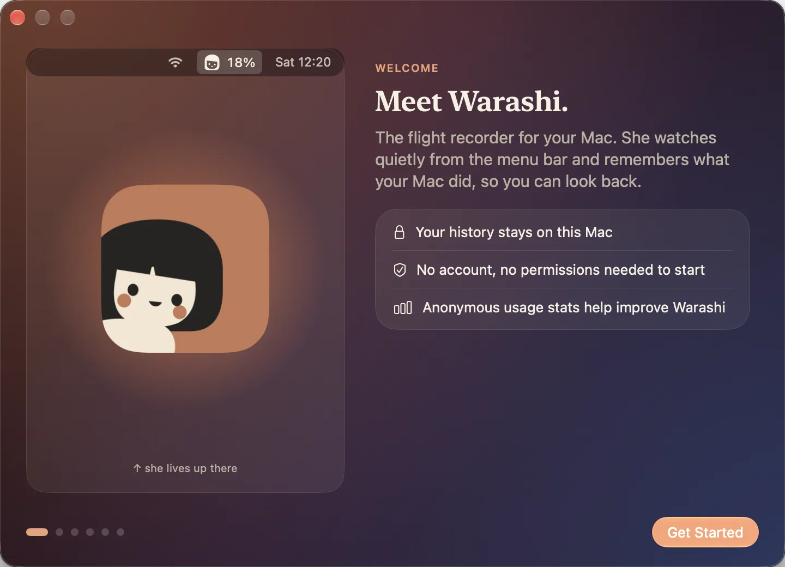
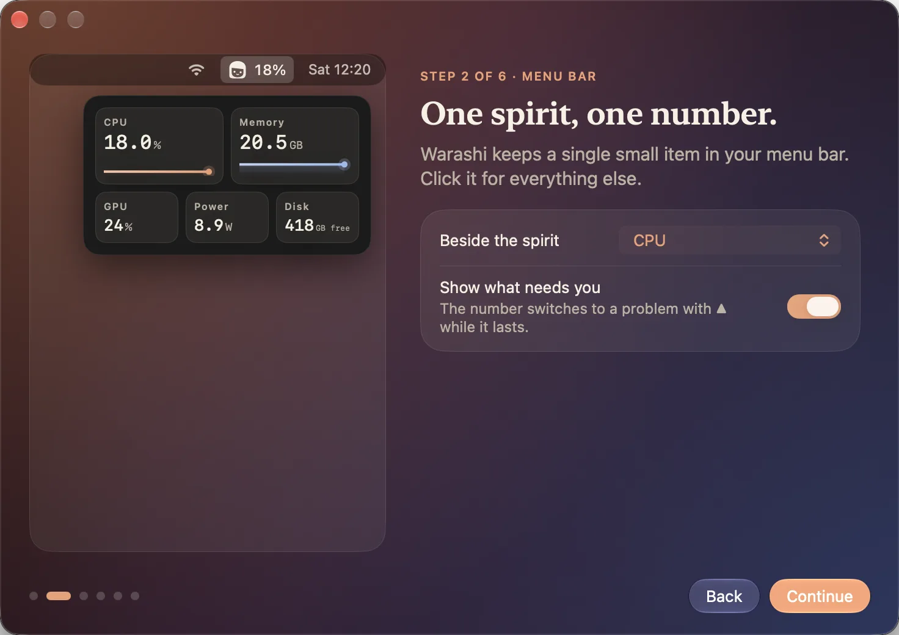
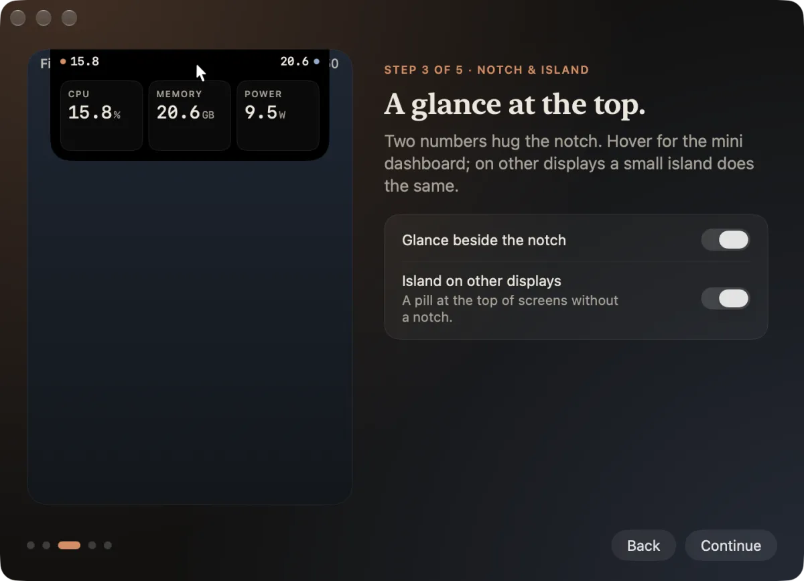
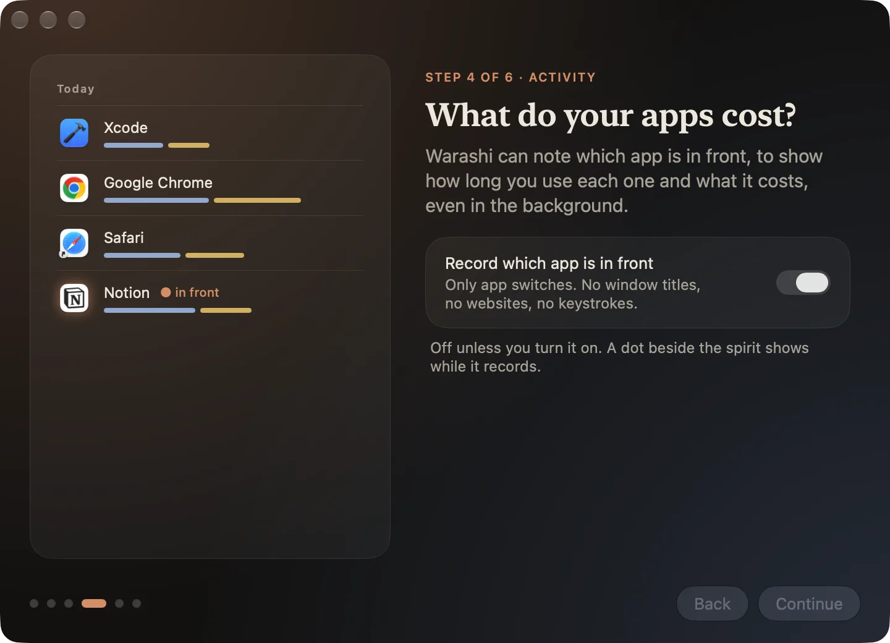
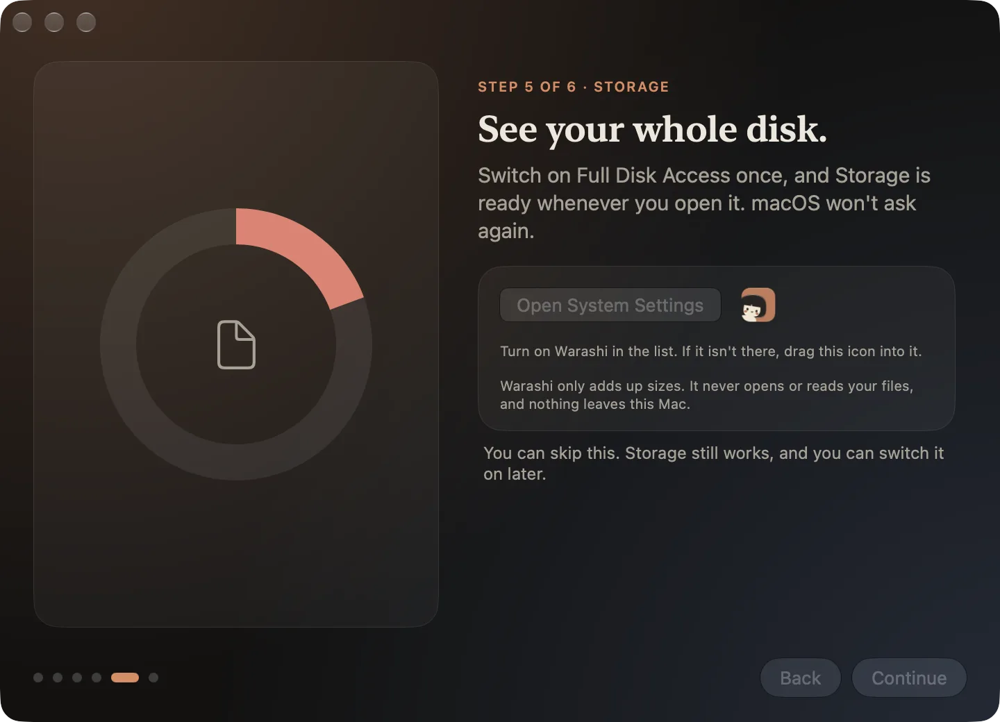

The first time Warashi opens, a short tour helps you set it up. Each page has a live demo on the left and one or two choices on the right. Use Continue and Back at the bottom; the dots show where you are. Every choice can be changed later in Settings.
- Meet Warashi
What Warashi is and three promises: your history stays on your Mac, no account or permissions are needed to start, and anonymous usage statistics help improve it. Click Get Started.

Page 1: Meet Warashi. - One spirit, one number
Choose the number shown beside the spirit in your menu bar: CPU, memory, GPU, power, temperature, network, disk, battery, or the spirit alone. Show what needs you lets the number switch to a warning (for example
▲ MEM 29 GB) while memory is short or the Mac is hot.
Page 2: what the menu bar shows. - A glance at the top
Turn on Glance beside the notch to see two numbers right beside your MacBook's notch, and Island on other displays for a small pill on screens without a notch. Hover either one for a mini dashboard.

Page 3: the notch and the island. - What do your apps cost?
Turn on Record which app is in front to see how long you use each app and what it costs, in front and in the background. Only app switches are recorded: no window titles, no websites, no keystrokes. It's off unless you turn it on.

Page 4: activity recording (optional). - You're all set
Turn on Open Warashi at login so your history has no gaps: the Upgrade Advisor needs 30 days of it. Click Start Watching, and the spirit appears in your menu bar.

Page 5: open at login, then Start Watching.
If something's not right
- Open at login doesn't stay on: macOS may want your approval. Open System Settings › General › Login Items and allow Warashi.
- The tour didn't appear: open Warashi from Applications, then Settings › General › Show Welcome Again.
More in Troubleshooting, or email adam@warashi.app.